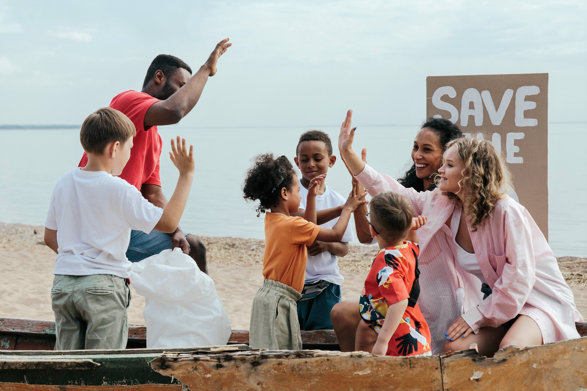
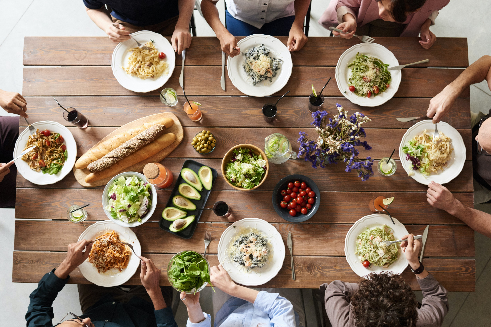

Get Informed

WHY
would I go vegan
- For the planet
- - It can drasticaly reduce your impact on the environmental degradation, including deforestation, water pollution, and greenhouse gas emissions.
- For your health
- - It can lead to lower rates of chronic diseases like heart disease, obesity, and type 2 diabetes.
- For the animals
- - Influences traditional animal agriculture practices to improve their standards so we all can peacefully share this earth with less avoidable cruelty.

WHAT
would I eat as vegan
- Fruits & Greens
- - There are many considered to be nutritionally dense. Some of the best include: Berries, Kiwis, Mangos, Bananas and Spinach, Kale, Swiss chard.
- Beans & Cruciferous
- - Known for their high nutrition and health benefits. Some of the best include: Lentils, Chickpeas, Beans, and Broccoli, Sweet potatos.
- Grains & Seeds
- - known to be highly nutritious and healthy. Some of the best include: Quinoa, Rices, Oats and seeds of Chia, Flax Hemp, Pumpkin.

HOW
would I do veganism
- You can start slow
- - Reduce the amount of animal products in your diet and experiment with plant-based substitutes for your favorite animal products.
- Connect with others
- - Join vegan communities localy or online to connect with others who are on the same journey and to share resources, advice and recipes.
- Mindful consumption
- - Be mindful of all consumer choice. Food, clothing, cosmetics, home goods or entertainment, consider the impact of these choices on animals and the environment.